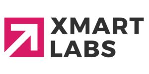

Daniel Tobon Collazos
About me
I am an MLOps Engineer currently working at SmartJob, collaborating with Falabella Tech on the design and implementation of scalable and secure MLOps platforms. My work focuses on automating training-to-serving pipelines, ensuring reproducibility, monitoring, governance, and enabling machine learning models to reach production efficiently.
Previously, I worked as a Machine Learning Engineer at Xmartlabs, collaborating with Levi Strauss & Co. on embedding-based recommendation systems for e-commerce platforms, optimizing similarity search systems and production pipelines on Vertex AI.
I obtained my BSc in Mechatronics Engineering from Universidad Autónoma de Occidente, where I developed a robotics perception system to estimate geometric features in trees as my degree project.
I grew up in Santiago de Cali, Colombia. I’m passionate about building reliable ML systems, optimizing processes, and continuously learning new technologies that create real-world impact.
Publications & Research
A photogrammetric system for dendrometric feature estimation of individual trees
Daniel Tobon Collazos
IEEE Colombian Conference on Robotics and Automation (CCRA).
Work Experience
MLOps Engineer – SmartJob
Collaborated with Falabella Tech in the design and implementation of a scalable and secure MLOps platform.
Ensured models reach production in a reproducible, traceable, and efficient way.
* Automated training-to-serving pipelines (CI/CD, IaC, orchestration)
* Implemented monitoring, drift detection, alerts, and rollback strategies
* Established governance and cost control practices
* Strengthened collaboration between Data Science, Data Engineering, and SRE teams
Machine Learning Engineer – Xmartlabs

Collaborated with Levi Strauss & Co. to build embedding-based recommendation systems for e-commerce applications.
Generated 1024-dimension text and image embeddings and optimized similarity-based retrieval systems.
* Computed cosine similarity for text-image matching
* Deployed 3 production pipelines on Vertex AI
* Reduced Docker image size from 16GB to 8GB
* Reduced Vertex AI pipeline time from 16 min to 5 min
* Improved GitHub Actions deployment time from 2h to 5 min
Senior Machine Learning Engineer – AB InBev
Designed scalable and reusable ML components to streamline experiment tracking and deployment processes.
Built and optimized classification, regression, and clustering models to extract insights from large-scale datasets.
* Designed ETL pipelines using Azure Data Factory
* Deep learning initiatives using OCR (Pytesseract)
* Object detection and classification using embeddings
* ML Platform initiative with Airflow + Databricks
* Built reusable MLflow components for experimentation and deployment
Machine Learning Scientist – AI Turing
Worked as a member of the AI team researching, building, and designing self-running ML systems.
Focused on object detection and classification while improving model performance and architecture design.
* Refactored deep learning models for object detection and classification
* Applied Google Cloud Platform resources (Cloud Functions, Vertex AI, Buckets)
* Improved evaluation metrics (confusion matrix, accuracy, IoU)
* Proposed computer vision alternatives to baseline models
* Researched MLOps initiatives
* Enabled custom metrics in TensorBoard
Research Engineer – IMAR
Worked in short-term prototyping projects involving embedded systems, computer vision, and IoT applications.
Built and deployed solutions for sensor data analysis and quality inspection systems.
* Managed a vision system for quality inspection using OpenCV
* Built interface framework for Intel RealSense camera in PCL and ROS
* Developed Industrial IoT solutions for biomedical quality inspection
* Adjusted RFID project using nRF5 SDK
* Completed CMake project for nRF52 SDK using JLink
* Developed IoT application using ESP32 and ESP-IDF framework
Selected Projects

Density-based spatial clustering of applications with noise (DBSCAN) is a data clustering algorithm

This project is a photogrammetric system for dendrometric feature estimation of individual trees. The purpose of this project is to do a 3D reconstruction of an individual tree using Open Multiple View Geometry (openMVG) and get dendrometry estimation (diameter at breast height (DBH), tree crown height, total tree height, crown volume, morphic factor and percentage canopy missing) of a stem tree

C++ application to convert pcd file, ply file, txt file or xyz point cloud to MESH representation (Gp3).